Distancia media al Sol: km, UA
Radio medio: km
Gravedad ecuatorial: m2
Periodo de rotación: días
Temperatura media: °C
El Sistema Solar
 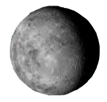
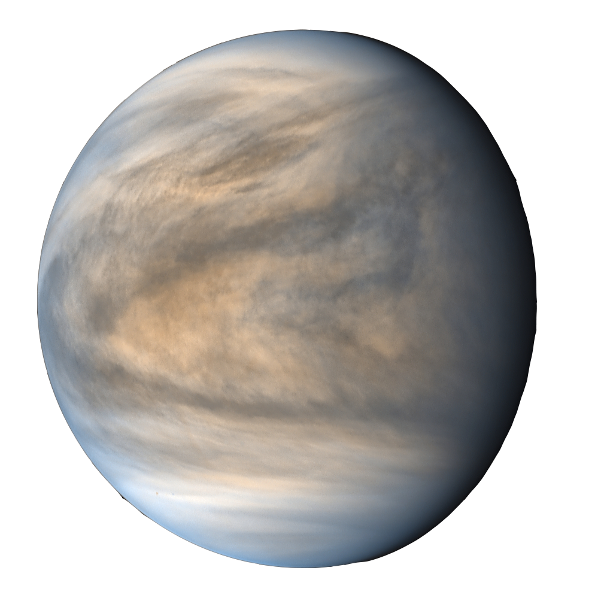
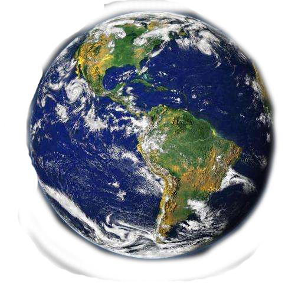
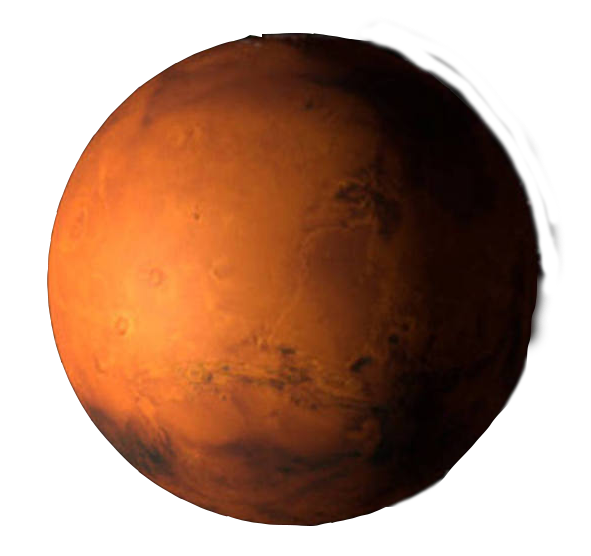
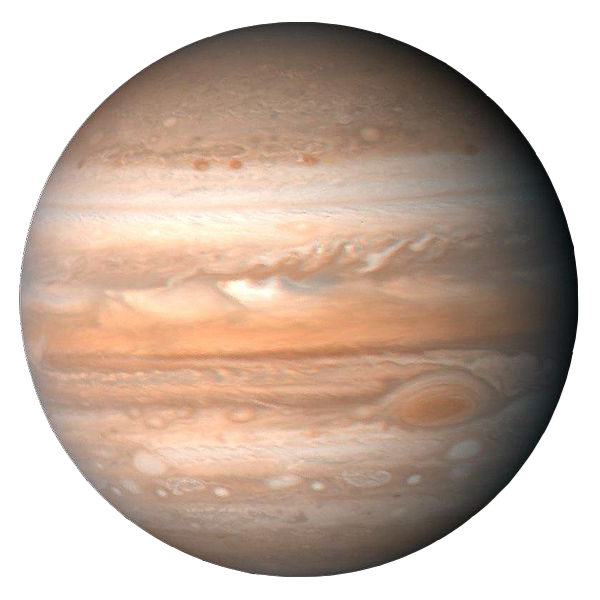
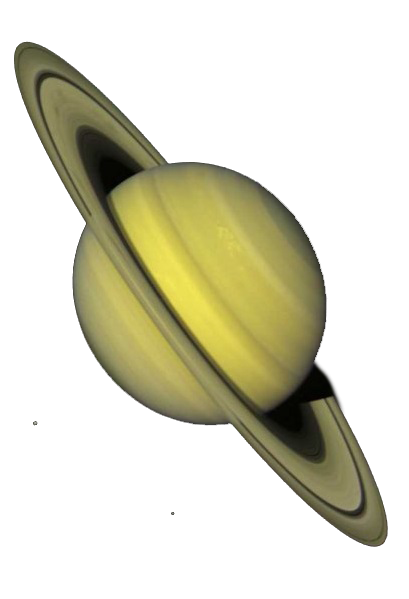
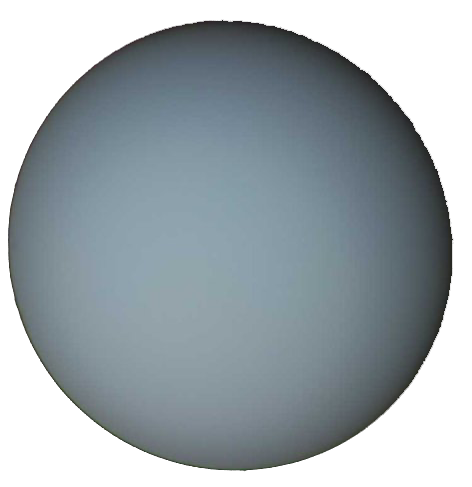
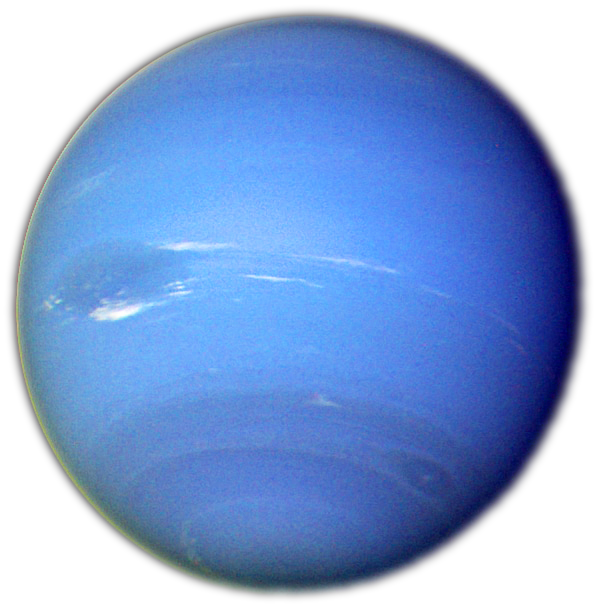
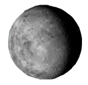
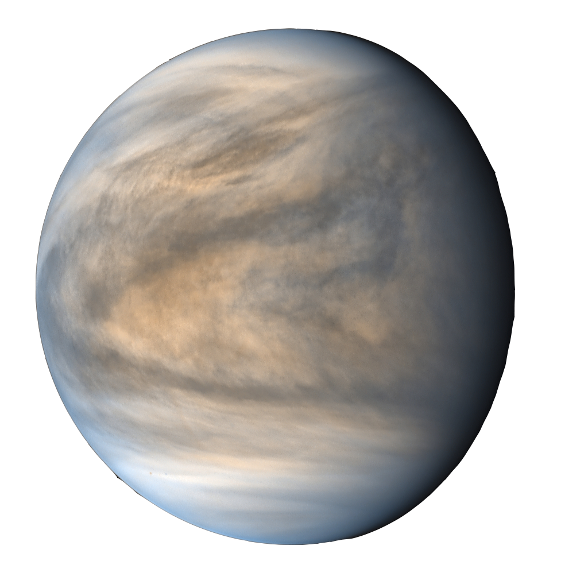
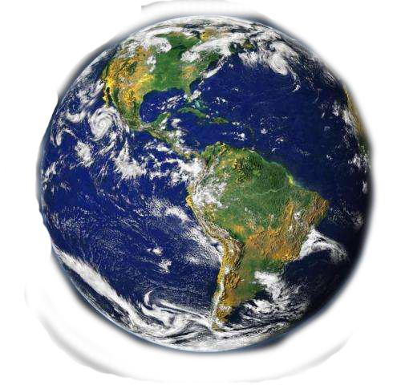
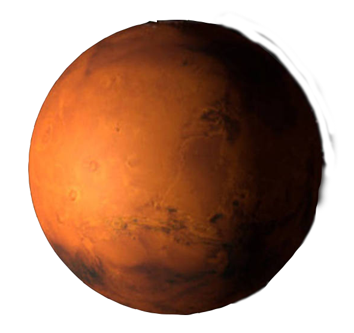
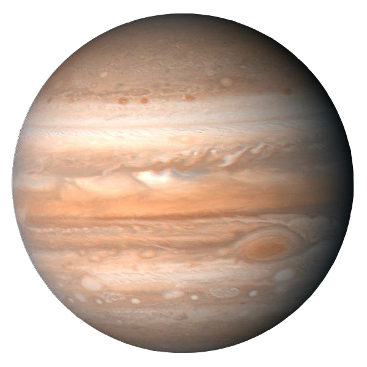
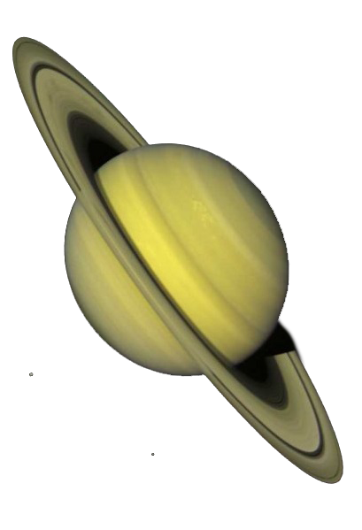
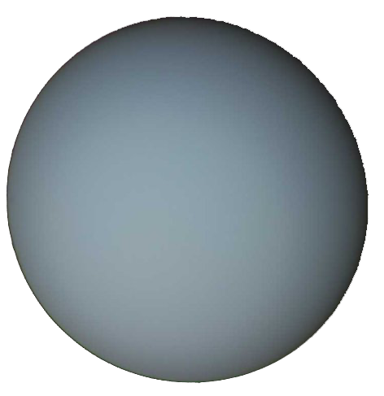
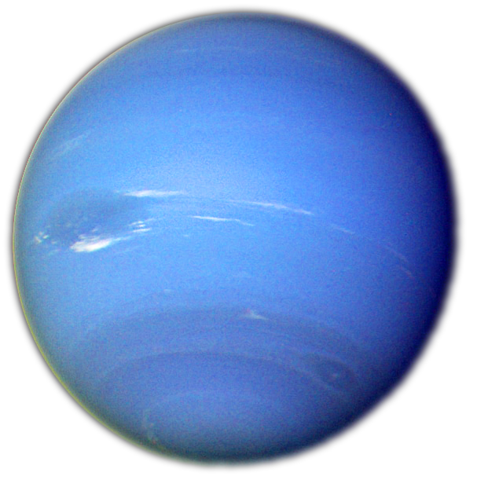
Has click sobre un cuerpo celeste para obtener más información